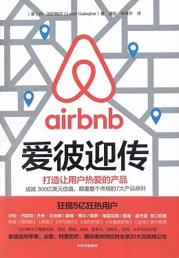

|  |
爱彼迎传：打造让用户热爱的产品 |
前言
在旧金山费尔蒙酒店的大堂酒吧，我和布莱恩·切斯基相对而坐，座椅的靠背较高，天鹅绒质地，颇显贵气。
那是2015年11月初，我们在此会面，我把通过写书讲述其公司的故事的想法告诉了他。他把他的公司命名为“房屋共享”平台爱彼迎（Airbnb），我也打算以这个已家喻户晓的称谓作为书名。有些戏剧性的是，我们见面的酒店正好承办了2007年的国际设计大会。当时，旧金山市区的所有酒店住满了参会者，切斯基和他的联合创始人乔·杰比亚突发奇想，在自己位于市场南街的三居室公寓里出租充气床垫供房客住宿。
这种想法既体现了切斯基的雄心壮志，也反映出他的务实精神。他说自己会全力配合写书，也相信我会写好。我们交谈了10分钟。那是一个幸运日：前一天晚上，经过旷日持久的谈判，爱彼迎在旧金山成功驳回一项大幅度限制其经营范围的投票提议。切斯基随后要去巴黎参加爱彼迎房东大会（Airbnb Open），这是公司为“房东”举办的年会庆祝活动——这些房东把产品发布到爱彼迎平台。当我们从休息室往外走时，他兴致勃勃地向我介绍公司的庆祝方案：某天晚上，成百上千的巴黎房东将按计划向全体成员敞开房门，在这座“灯光之城”举办一系列周密策划的宴会。他激动地说道：“这将是世界上规模最大的宴会。”
说完，这位34岁的亿万富翁离开了房间。
2008年，我首次听说爱彼迎这家公司，当时我负责《财富》报道商业故事的版面。我们听说两个敢想敢干的创业者在2008年美国总统竞选期间兜售印有仿奥巴马和麦凯恩头像的精装早餐麦片，称为“Obama O's”和“Cap'n McCain's”。这两人毕业于罗得岛设计学院，试图为他们始创的新公司——爱彼迎树立口碑，让房东向需要住宿的旅行者出租卧室。虽然这个商业创意并不新鲜，但是麦片噱头着实大胆，受到全民关注，因此我们在《财富》上专门撰文报道此事。当时，我觉得这家公司不过是昙花一现。
我的脑海里浮现出提供房屋租赁在线服务的其他公司的名字：HomeAway.com，VRBO.com，Couchsurfing.com，Bedand-Breakfast.com。我试图厘清这家新公司有何不同，这些科技新公司究竟如何运作。我记得曾向一位同事发牢骚，这些公司的创意不过是老生常谈，却用徒有其表、设计精美的网站包装粉饰，彰显极简主义风格，以新外壳重新投放市场。
但这家公司力求与众不同，坚信短期内便会立竿见影。果不其然，爱彼迎不久就功成名就。你原本只想求租房屋过夜，可人们已经开始上线推出一些离奇古怪的住宿地：树屋、船屋、城堡以及圆锥形帐篷。千禧一代尤其追捧这种新的旅行理念，价格公道，惊险刺激。你住在当地人的家里，摒弃传统的旅行模式，和志同道合的人交往，而且费用比入住酒店便宜得多。上传房源和在线预订渐渐备受推崇。早在2011年，爱彼迎就从投资人那里筹募到高达1.12亿美元的资金，投资者认为它的估值超过10亿美元，其平台住宿交易量已达100万人次。接下来的几年里，公司轻而易举地突破了这些数据：100万次的在线预订量迅猛增长到500万人次、1000万人次、5000万人次，2016年底“入住房客”已达到1.5亿人次——其中的7000万人次交易量是近一年产生的。公司的估值随之攀升至100亿美元、250亿美元甚至300亿美元。然而公司仍然不太关注房地产市场，也不愿参与其中。分析家预测爱彼迎今后还会发展壮大。
当然，并非所有人都对此表示赞同，爱彼迎的发展也遭遇到一些困境。在世界各地的许多城市，爱彼迎的基本业务活动（个人短期内将自己的部分或所有房产出租给他人）是非法的。虽然各国和各大城市的法律存在差异，但随着公司不断壮大，越来越多的反对者开始使用相关法律条款对这种服务予以限制。这场纷争让一些人聚集起来组建了一个松散的联盟，其成员来自自由派政治家、房地产集团、工会组织和酒店业。在他们面前说起爱彼迎，就如同触及了地雷。与此同时，爱彼迎使得大批暂住者突然涌现，许多城市的公寓楼联盟和居民对此提出抗议，这些暂住者引发了邻里纠纷。此外，反对者们声称爱彼迎平台上满是职业房地产商，这些机构把房源囤积起来，仅用于租赁。他们认为这会导致市场上房源不足，使多数地方出现的廉价房产危机进一步恶化。在纽约和旧金山等城市，反对者们寻求制定法律以限制爱彼迎的业务。爱彼迎越兴盛，反对的呼声也就越响亮、越强烈。
爱彼迎还因安排陌生人合住而引发一些始料未及的问题，比如抢劫、袭击以及因房东的过失导致的触目惊心的悲剧。近年来，公司不得不面对网站平台的另一大问题：种族歧视和其他歧视。
不管是否认同，爱彼迎已经迎合了我们的喜好，成为一种时代思潮。《周六夜现场》栏目的点睛妙语里提到过爱彼迎，美国家庭票房有线电视台（HBO）热播的喜剧《硅谷》里也将它写入情节主线，爱彼迎甚至还成为电视智力竞赛节目《危险边缘》所提问题的答案。也许不久后还会拍摄一部浪漫喜剧，讲述因爱彼迎房东身份张冠李戴引发的闹剧。一些企业利用该平台巧妙地提升了其品牌价值：2016年新版《忍者神龟》电影上映前几周，爱彼迎平台上就推出了神龟“巢穴”的房源——制片方尼克罗顿国际儿童频道以及派拉蒙影视公司把地处曼哈顿翠贝卡街区的一套公寓改装成神龟主题房间。爱彼迎提供了展现个人创意的场所：2016年初，一场特大暴风雪席卷了美国东北部，一位住在布鲁克林区胆大又时尚的人士修建了“精品冬季冰屋双人间”，并将房源上传到爱彼迎平台（他描述道，“这个雪景中最令人心动的度假地设计精巧、匠心独运、别具一格”）。爱彼迎因该房源不符合标准规范而将其移出平台，但奖励房东50美元的创意礼券。
爱彼迎秉承的基本理念并不新颖，切斯基经常提到最初唯一告知他爱彼迎创意还不错的人是他的祖父。祖父知晓他的想法后，点着头说：“哦，当然可以，我们过去就是这样旅行的。”
的确如此，不管是房客、付费寄宿者，还是以劳动换取食宿的留学生等，多数人都会告诉你：早在爱彼迎甚至互联网出现之前，人们就采用了“房屋共享”的模式。历史上许多名人在他们生活的那个时代就相当于今天的爱彼迎用户。1963年10月初到11月22日，李·哈维·奥斯瓦尔德居住在达拉斯橡树崖的一个房间里，每周支付8美元（这座房屋已成为可供参观的博物馆）。四季连锁酒店创始人兼董事长伊萨多·夏普回忆道，他在多伦多的犹太贫民区长大，父母留宿房客让他头一次懂得什么是热情款待。沃伦·巴菲特也说，多年来，他经常在家里招待需要住宿的旅行者，包括当时竞选总统的乔治·麦戈文。维基百科的网页上有关于“房屋共享”概念的介绍，却没有提及爱彼迎。
诚然，虽然短期度假租房几十年前就已流行，但如今越发时尚，比如短租市场上有HomeAway或VRBO之类的大企业，BedandBreakfast.com这样的针对特定群体的网站，以及克雷格网站先前制作的宣传广告或者分类广告。阿伦·桑德拉拉贾是纽约大学的教授，著有《共享经济：雇佣时代的终结和群体资本主义的兴起》（The Sharing Economy: The End of Employment and the Rise of Crowd-Based Capitalism）一书，他曾评论道：“共享经济的鲜明特色在于，这些思想本身并不是新近才提出的。”
具体而言，爱彼迎排除障碍，搭建起便捷友善的平台，欢迎人人参与，这才是新的元素。和先前的网站不同，爱彼迎的房源图片经过精心设计，展现出房东的个性特征。公司还提供个人专业拍摄服务，确保室内空间华美诱人。此外，在线搜索、信息发送以及支付方式都自成体系、严密周到，不会引起纠纷（许多人认为爱彼迎不是科技型企业，因为它主要从事房产信息交易，实际上，它拥有硅谷最先进的后台工程技术基础设施）。公司运用一系列手段强化相互信任，比如必须向提供住宿的客户付款后才能进行双方互评，以及使用身份识别验证系统。爱彼迎独树一帜的特点在于把业务定位于大都市，这一点却少有人探讨。大多数房屋租赁公司的业务重心是二手房、传统度假或休闲胜地的房源。尽管爱彼迎也在平台上推出树屋和船屋，但其多数房源是单间公寓、一室一厅和两室一厅公寓，这对众多旅行者颇具吸引力，也对酒店业构成了威胁。爱彼迎鼓励普通大众利用现有空间获利，即便你拥有的只是一个租来的单间公寓，也会给房客和旅行者带来全新的体验。这迎合了千禧一代酷爱的在大都市便捷生活的需求。在线平台企业按规模划分，一旦发展到一定阶段，其市场主导地位就很难动摇。
爱彼迎不仅颠覆了酒店业、旅游业、空间利用理念以及信任关系，还革新了传统管理理论。公司有一个独一无二的特点，即初创时期公司创始人完全没有经营经验，而且切斯基、杰比亚和柏思齐（即内森·布莱卡斯亚克，公司成立一周后，他接受了切斯基和杰比亚的邀请，成为第三位创始人，主要负责技术）必须在短时间内学会管理。不久，爱彼迎公司发展壮大，市场定位和目标日趋成熟完善。当然，它也遭遇了一些困境。先前那些公司一旦发展到这种规模，创始人便会散伙，或者由“职业”管理团队接手，但爱彼迎有所不同，三位创始人仍然精诚合作，共同执掌这艘亲手建造的宇宙飞船。
现年36岁的首席执行官切斯基对公司的发展感触最多。他当时完全是外行，不仅不懂经商，也不精通开发网站的专业技术，但他迅速成长，从对天使投资人和幻灯片演示一无所知，到今天掌管着一家市值300亿美元的公司，员工超过2500名。
虽然切斯基的名声最为显赫，但爱彼迎的发展离不开三位创始人的共同努力。36岁的杰比亚是一名设计达人，敢于锐意创新，童年时就显露出经商天赋。34岁的柏思齐是极具天赋的工程师，高中时代就着手开发软件，并在网上售卖，赚得100万美元；他单枪匹马搭建了爱彼迎的核心系统和基础设施，成就了公司的辉煌。这三人各有所长，个性鲜明，切斯基成长为公司的首席执行官，杰比亚和柏思齐近年来各自选择发展方向，成为能发挥特长的管理者。
当本书即将付印时，爱彼迎正准备发布一项重大声明，切斯基许诺这是年轻的爱彼迎的成长史中至关重要的一步，标志着它将彻底重新定位：不再止步于住宿领域，而是雄心勃勃地跨入“新的旅程”，推出一系列新产品、措施和体验。爱彼迎不再仅仅局限于在线预订住宿业务，而是计划升级为推广独具地方特色活动的平台，比如在肯尼亚和马拉松选手一起训练，或者在居住城市和志趣相投的爱好者一起修剪盆栽。公司要拓展酒店预订和地面运输业务，不久后还会推出机票预订服务。对于一家起步不久，尤其是公司的核心业务收入几乎年年翻一番的公司来说，这是一个大胆的举措、一条全新的庞大业务线。
第一章 原则1：找到创造性的解决方案
其实，爱彼迎的故事由来已久，始于2004年夏天罗得岛设计学院的一间工作室，该设计学院位于距离旧金山4800千米的罗得岛州首府普罗维登斯。布莱恩·切斯基和乔·杰比亚是罗得岛设计学院的学生，杰比亚在此攻读五年制的工业设计和平面设计双学位，当时正上大四，而切斯基刚刚毕业。他俩参与了该校与美国Conair公司合作的研究项目，这家公司主营吹风机和个人护理产品。众多公司都与罗得岛设计学院展开合作，招聘工业设计专业的学生。按照这项合作计划，Conair公司与学院确定合作关系，由校方安排一些学生用六周时间专门为公司设计产品。大部分项目工作在校内完成，但Conair公司拥有产品的所有权，学生可获取实际工作经验和薪水。在项目结束时，学生将向公司高管陈述其产品创意。
杰比亚和切斯基常常切磋商讨，杰比亚告知切斯基CritBuns坐垫的创意，两人集思广益为3DID公司提出新的产品设计构想。杰比亚常在交流结束时，请求切斯基考虑搬往旧金山，一起创办一家公司，可切斯基总以同样的理由推辞：除非有健康保险，才会考虑搬迁。一天，切斯基工作时收到杰比亚寄来的包裹，里面装有一对刚面市的CritBuns坐垫。杰比亚已成功将其投入市场，并得到现代艺术设计博物馆的大订单，这曾是多少设计师追求的目标。“他真的做到了！”切斯基记得当时自己这样感叹道。杰比亚则说：“这只是一次小小的成功，它提醒我：不要忘记，我们也有创造天赋。”
杰比亚的这次成功让切斯基着手考虑在旧金山寻找机会。2007年初，他获知家庭用品公司Method招人，这家公司发展迅速，注重环保，其产品包装也屡获殊荣。切斯基认为这可能就是他正在寻找的机会：这是一家专注设计的公司，其价值观与他非常契合，吸引着他迁往旧金山。他在面试中发挥出色：经历了好几轮面试，完成了设计要求，并在由五位高管组成的小组前陈述其设计。每一阶段都让他越发向往进入这家公司，但最终他输给了另一位应聘者，这让他心灰意冷。
充气床垫与早餐
他们突发奇想：何不利用公寓闲置的空房为参会者提供食宿服务呢？毕竟，罗得岛设计学院赋予了他们用创造力解决问题的能力。当时，杰比亚的壁橱里恰好存有供露营活动使用的三张充气床垫。这套三居室比较宽敞，客厅、厨房以及空余的卧室都可供出租。他们的报价很低，甚至免费提供早餐，并把这则广告投放到参会者常去阅读的设计圈博客里。
这个想法酝酿了好几周，他们讨论的次数越多，越觉得这种做法有点不可思议。不过，交房租的最后期限一天天逼近，他们只能孤注一掷了，开始为宣传其出租广告的网站绘制三维线框和实物模型。切斯基入住后，他们立即雇用了一位精通网页制作的自由职业者，让他按照设计搭建一个初级网站，并将此服务命名为“充气床垫与早餐”。最终，一个完备的网站投入使用，介绍他们的服务项目（“两名设计师独辟蹊径，助力今年的IDSA会议”），说明申请流程，列明设施清单——以80美元单价出租每张充气床垫，以及一些生活设施，包括屋顶平台、“创意图书馆”、“励志海报”和3D打印机。一名“支持者”曾称赞道：“它就像克雷格网站和沙发客网站的结合版，但更专业些。”
他们向设计圈博客和会议组织者发送电子邮件，请求宣传他们创建的网站。会议组织者认为该创意古灵精怪且趣味横生，设计圈博客也非常乐意帮助这两位同人。切斯基和杰比亚觉得无论如何都会有几个嬉皮背包客入住，总能赚够房租。几天后他俩就接到了三笔订单：卡特，一个来自波士顿的30来岁的设计师；迈克，一个40多岁的犹他州人，有5个孩子；阿默·瑟维，土生土长的孟买人，刚刚取得亚利桑那州立大学工业设计硕士学位。
这些客人根本不是嬉皮士，他们是经济拮据的专业设计师，而杰比亚和切斯基提供的服务正合其意。诚然，这需要他们大胆地信任杰比亚和切斯基。第一个预订的房客瑟维觉得这个想法很奇怪，但他说：“我非常想来参会。”当瑟维发现这家网站时，便感到它是由志趣相投的人创建的。他评价道：“你能判断出这是由设计师为设计师而设计的理念。”他以前从未听说过充气床垫，用谷歌搜索后才得以了解，随即在网站上提交了申请，准备在“别具一格”的充气床垫上过夜，并享用早餐。但瑟维没有收到回复，只得查找杰比亚的信息，并致电洽谈。（“杰比亚当时十分惊讶，”瑟维回忆道，“根本没想到居然会有人联系他们。”）瑟维打算住5晚，每晚房租80美元。“这对我们双方来说都是一种尝试。”瑟维说道，“我为了参会而放手一试，他们为了凑齐房租也打算放手一试，这也算是天作之合。”
让用户自己讲述体验的乐趣
瑟维在机场落地后，按照房主提供的地铁路线，不久便到达公寓，受到杰比亚的热烈欢迎。瑟维回忆道：“一个戴着飞行员帽和大框时尚眼镜的家伙开了门，当时我想，是的，眼前这人就是一个设计师。”杰比亚让他脱鞋入内，带他在屋内逛了逛，看了看入住的房间，室内配备一张充气床垫、一个枕头以及欢迎套装，里面装有地铁路线、城市地图和施舍给流浪汉的零钱。“他们真是考虑周到，”瑟维说，“他们问我，‘还有什么需要我们准备的吗？'我回答道，‘不，这已经相当好了'。”
瑟维放下行李，坐在客厅的沙发上，打开笔记本电脑，熟悉会议议程。杰比亚和切斯基正伏案工作，将他们的新理念制成幻灯片。瑟维俯身一瞧，看见一张介绍自己作为首位房客的幻灯片。“这太令人啼笑皆非了，”他说道，“我一来到客厅，便发现幻灯片里在介绍我。”杰比亚和切斯基接二连三地询问瑟维的意见，并邀请他参加那晚举办的宣传活动——采用一种名为PechaKucha的动画版PPT，设计师声情并茂地将自己的创意传达给其他同行。杰比亚和切斯基陈述完毕，现在轮到他们让自己的终端用户发言了。
公寓很快迎来了另外两位房客，卡特和瑟维共住一间，迈克则住在厨房。第二天，三位房客动身外出开会前，切斯基和杰比亚正忙前忙后，策划推广其新创意。他俩告诉会议组织者自己是博客作家，借此免费入场。混进会场后，切斯基将相机挂在脖子上，颇有几分博客作家的风采，眉飞色舞地介绍他们的新服务。瑟维说：“他逢人便推销。”瑟维成了他们的活招牌。“问他便知这种服务有多棒！”切斯基边说边将瑟维推向前。瑟维讲述自己获得的入住乐趣，并证实这不仅仅是一个居住场所。“我的客户竭力支持我们！”回想过去，切斯基评价道，“他起到了惊人的推广作用。”人们都觉得这很有趣，但没有人加以重视。在费尔蒙酒店休息室茶歇期间，人群将一位著名设计师团团围住，切斯基设法挤进去和那位他素来敬仰的设计师攀谈，自我介绍后开始阐述自己的创意。可设计师似乎对此毫无兴趣，他说：“布莱恩，我希望这不是你目前的唯一灵感。”这是我们第一次遇到阻碍。切斯基说：“那一幕至今我仍记忆犹新，就像往我头上浇了一盆冷水。”
他们又把注意力转向集思广益创办一家真正的公司，于是邀请杰比亚以前的室友柏思齐加入。柏思齐来自波士顿，是一位天赋极高的电信工程师。他的父亲是一名电气工程师，年仅12岁的柏思齐从父亲的书架上找到了一本书，自学了代码。14岁时，柏思齐越发着迷此项工作，开始在线接一些付费业务。高中毕业前，他大概编写了价值接近100万美元的建筑和市场销售软件，这笔钱资助他完成了哈佛大学计算机科学专业的学业。2007年，柏思齐的教育创业项目失败，打算辞掉工作。那时，杰比亚刚离开编年史出版社，继续致力于他的新创意——Ecolect.net，向设计圈出售环保材料，这是继CritBuns坐垫后的第二项设计。他们三人促膝长谈，话题不断，曾构思创建一个室友配对网站，把克雷格网站与脸谱网相结合。切斯基说：“也许没有人需要充气床垫和早餐这项服务，但是人们肯定需要室友。”经过四个星期的设计和改进，他们将“roommates.com”输进浏览器，发现该创意和网站早已存在，梦想顷刻间化为泡影，只得从头再来。
那年圣诞节，切斯基灰心丧气地回到纽约尼什卡纳的家中。当亲朋好友问及其职业状况时，他告诉大家自己正在创业。他的母亲却纠正道：“不，你失业了。”他反驳道：“不，我正在创业！”“不，你就是失业了。”他的母亲再次强调。除了他的父母外，“创业者”这个词在尼什卡纳并不为大家所熟知。他的朋友往往会问起：“那么你在创什么业呢？”切斯基无从回答，脑海里一遍又一遍地回想起那次“充气床垫与早餐”的经历。而此时在亚特兰大家中的杰比亚，也有相似的遭遇。他们常常谈起那次“充气床垫与早餐”的经历，随后开始扪心自问：这就是他们的创业目标吗？
发现需求
假期归来，切斯基和杰比亚跃跃欲试，打算潜心发展“充气床垫与早餐”理念。经过周密的讨论，理念日趋完善：当会议举办地周边住宿紧张时，为与会人员提供短租房源。他们深知各种会议常常使周边的酒店客满为患，寻求住房的需求也就应运而生，比如之前旧金山那三位短租房客。对于孵化该项目的地点，他们已心中有数：定在South by Southwest（SXSW）音乐节举办地奥斯汀。众所周知，奥斯汀经常举办科技会议、音乐和电影节等。
但他俩明白必须说服柏思齐，这个团队少不了他。他们致电柏思齐，邀请他共进晚餐，说有振奋人心的消息要告诉他。晚餐期间，他俩向柏思齐详细阐明了想法。他有些犹豫不决，这项创意确实不错。与杰比亚同住的时光，他们在无数个周末和夜晚互帮互助，共同解决项目难题，从日常的点点滴滴可以看出，他们拥有共同的工作理念。他也相信他们三人能精诚合作。听完两位队友描述的美好愿景，他不禁对庞大的工作量忧虑重重。他是三人里面唯一的工程师，大部分的技术工作都会落在他的肩上。在未来的几周里，他需要开发并运营网站，以期赶上会议召开。柏思齐回忆道：“我当时既表示积极支持，又提醒要小心谨慎。”觉察到柏思齐有所顾虑，切斯基和杰比亚离开了餐厅，重新商议对策。一周后，他们又开始动员柏思齐。在去见柏思齐的路上，杰比亚在电梯里突然意识到他们仍然有些好高骛远。“这会吓到他，”杰比亚摇摇头说，“我们必须缩小规模。”于是他们决定重新调整计划，改称为简化版爱彼迎，其理念更精简，特色更明晰，技术障碍更少，几周后便能正式实施。杰比亚称之为“产品宗旨不变，技术编码减半”。最终，柏思齐同意加入。自此，项目开始启动。
他们将眼光瞄准了SXSW音乐节，让爱彼迎网站以全新的姿态出现，试图掀起一场舆论热议。（切斯基曾向其他创业者透露过这个技巧：“若你的项目投入市场，却未引起任何注意，你要继续造势。只要我们一直坚持，媒体就会继续报道，直到我们招徕到客人为止。”）他们精心制作网站，宣称能解决会议期间的订房问题（网站里赫然写有“代替昂贵酒店的不二选择”），并在其他科技博客里刊登广告。但收效甚微，柏思齐说：“现在还不是吸引顾客的时候。”这多少有些自我安慰，实际上，当时他们只接到了两笔订单，其中一笔还是来自切斯基本人。
切斯基的室友名叫乐天东，是一名就读于得克萨斯州立大学奥斯汀分校的博士生。他们三人把他从克雷格网站挖了过来，成为爱彼迎平台的房东。切斯基刚回家，便发现乐天东已经将卧室的充气床垫收拾整洁，还把薄荷塞入枕芯，这一幕让他记忆犹新。而乐天东却记得切斯基的大部分时间要么待在阳台，要么和别人通电话，要么陷入沉思。每天早上，乐天东都为切斯基准备一杯浓咖啡（他说，切斯基“两秒内”一饮而尽），然后驱车带他去音乐节庆典现场。切斯基一上车，便开始畅谈自己公司的宏大愿景，聊起他殷切希望能和正在会场发言的扎克伯格面谈。
尽管收入为零，SXSW音乐节期间的产品推介还是获得了一些成效。通过亲自使用网上平台，切斯基发现了支付程序的一些缺陷。他不止一次（实际上是两次）忘记要去自动柜员机取钱，使他入住陌生人家里的两晚十分尴尬，因为房东没理由相信他确实有钱支付。乐天东觉得相处一两天后大家就是朋友了，谈钱显得有些尴尬。三位创始人意识到需要创建一个更加精细的支付系统。此外，音乐节活动结束后，他们听到一些潜在客户说要去其他地方，但不是去开会。这些人是否还会使用爱彼迎的服务呢？三位创始人认为不会了。
投资人的建议
在SXSW音乐节上，切斯基和杰比亚建立了重要的人脉网。他们在劳什街的第三位室友名叫菲尔·雷内瑞，就职于一家名叫Justin.tv的初创公司。他陪同公司的首席执行官在奥斯汀开会，这位年仅25岁的首席执行官名叫迈克·赛贝尔。切斯基决定多待一晚，赛贝尔便邀请他共住一间酒店客房。切斯基阐明自己的想法后，赛贝尔表示非常欣赏。赛贝尔回忆道：“我当时就说，‘言之有理'。”他曾用过沙发客网站，虽说当听到这个创意时，他无法预知爱彼迎会发展成为一个数百亿美元的新巨头，却丝毫没有觉得这个想法荒诞无稽。毕竟，会议期间他们自己也只能挤在狭小的酒店客房。赛贝尔说：“我们找到了问题的根源。”
如今，赛贝尔已是一位著名的创业顾问，曾取得两大辉煌成就：他和联合创始人以9.7亿美元的价格将Twitch（Justin.tv重组后的名字）卖给亚马逊，还以6000万美元的价格将视频应用软件Socialcam卖给欧特克（Autodesk）。当时他25岁，第一次出任首席执行官，经验不足。他说：“我并非别人口中的那种人。”切斯基和杰比亚是找赛贝尔咨询的头两位创始人，但那时他刚组建完Y Combinator，这是由企业家和风险投资家保罗·格雷厄姆共同创立的著名项目，旨在促进初创公司的发展（赛贝尔现在是Y Combinator的首席执行官）。赛贝尔告诉他们，他会给予一些建议，而且一旦他们规划出更具体的方案，他就会将其介绍给一些天使投资人。切斯基不太明白赛贝尔的用意。（他现在回忆道：“我当时想，天，这家伙居然相信天使。那地狱呢？”）赛贝尔向切斯基解释说，他指的是天使投资人，大家一起吃顿饭聊聊，也许投资人会给他一张两万美元的支票。切斯基认为那听起来更加不靠谱。“不，不，你得给他们一个方案，一个幻灯片。”赛贝尔强调。切斯基不清楚幻灯片的作用，但他觉得赛贝尔是一个值得信赖的人。
SXSW音乐节的项目结束后，他们的网站浏览量不大，两位创始人只好回到旧金山。切斯基和杰比亚情绪低落，但他们已打定主意再试一次。当时恰逢选举年，民主党全国代表大会将于8月在丹佛举行，他们可以再放手一搏。可柏思齐的态度有所转变，从最初的慎重、担心变为疑虑重重。他一直在策划另一个更向往的构思——为脸谱网设计社交广告网，虽说仍对爱彼迎网站感兴趣，但面对SXSW音乐节项目的情况，在切斯基和杰比亚想出更好的发展战略之前，他不会全身心地投入其中。他说：“当时杰比亚和切斯基要继续干下去，但我有点摇摆不定，我们必须先想清楚如何提升产品和成效。”因此，在接下来的几个月里，柏思齐把大部分时间花在了自己的创业项目上，切斯基和杰比亚则一直致力于完善他们的想法与产品，将每周的新进程递交给赛贝尔，由其提供反馈和建议。“赛贝尔为我们把关掌舵，”杰比亚说，“每当我们要走偏时，他就会提醒我们，‘伙计们，你们在干什么？快退回来'。”二人将赛贝尔戏称为他们的“上帝创始人”。
但因为柏思齐不能全心投入，赛贝尔的许多建议无法付诸实践。切斯基和杰比亚不想让赛贝尔知道柏思齐只是兼职，因为赛贝尔已着手把他们介绍给投资人，而一旦缺少工程创始人，初创公司就会失去融资机会。赛贝尔原以为柏思齐在爱彼迎网站是全职工作，杰比亚和切斯基也以为他每天兼职几小时，但他们不敢告诉赛贝尔，事实上，柏思齐每隔几天才顶多花一小时在此项工作上。“我们后来才知道如何去核实他的工作时间，”切斯基说，“他的工作量越来越少，我们之间的联系也越来越少。”
5月，柏思齐扔下一枚重磅炸弹：他要搬回波士顿和女朋友结婚，当时她就读于医学院。“那时杰比亚和切斯基也许觉得我有点不靠谱，”柏思齐承认道，“大家感觉这个团队要散伙了。”的确如此。接下来的一个月里，切斯基和杰比亚开始寻找新的合伙人。苹果公司在旧金山莫斯康展览中心举办了一场全球开发者大会，会议期间他俩张贴了招募“共同创始人和首席技术官”的广告。柏思齐回忆道，那时这对他影响甚微，他说：“我对他们能够找到合适的人持怀疑态度，我想看到广告的人也会这么认为。我并不太担心一夜之间就会有人蹦出来接替我。”
切斯基和杰比亚坚持不懈：改进创意，从赛贝尔那里获取反馈，并与柏思齐保持电话联系。就在此期间，爱彼迎网站的新理念成形了，其内容更丰富广泛：不再聚焦于酒店客房售罄的会议期间，它将是一个预订民宿像预订酒店一样便捷的网站。本质上，这与今天的爱彼迎模式相差无几。这意味着他们必须建立一个复杂的支付系统，可以让客户在线支付完成交易。这同时意味着他们需要一个审查系统和一个功能更强大的网站。
这是一个更加雄心勃勃的愿景，也正是柏思齐想要听到的。柏思齐决定放弃其广告创意，因为他意识到那个创意不仅需要工程知识，还需要合作者，而他没有。于是他重新投入爱彼迎项目，同意在波士顿开展工作。
与此同时，切斯基和杰比亚开始与赛贝尔提及的“天使”见面——至少试了试。（此时，三人决定让切斯基出任首席执行官。切斯基回忆道：“那不算一次重要的谈话，但那时我们当中必须有人出来担任首席执行官。”这三位创始人都有各自擅长的领域，毫无疑问，切斯基是当中最有领导才能的。“我的见识不如乔和柏思齐，”他说道，“他们都曾在初创公司工作，而我没有，所以我尽力使自己颇有几分用武之地，直接过渡到创办自己的公司。”）向外寻求投资者的机会不久便泡汤了。赛贝尔给他们介绍了七位投资者，但大多数都未回复。即便有人回复，也是以各种理由表示拒绝：这不是他们的业务重心，他们在旅游项目方面运气不佳，潜在市场似乎不够大，他们手头有其他项目，他们出城了，他们没时间。
切斯基和杰比亚与那些投资人的几次会面大多毫无成果。投资人认为把空房间出租给陌生人的想法非常荒诞和极度危险。切斯基和杰比亚毕业于艺术院校，这一点也让投资人心存担忧，投资人认为这两人欠缺技术基因（那时，投资者仍在寻找像谷歌公司创始人那样的人才，两位来自斯坦福大学的博士生共同创立了谷歌）。他俩在帕洛阿尔托的大学咖啡馆会见了一位投资人。这位投资人在会谈期间猛然站起来，径直离开，桌上只留下半杯奶昔。杰比亚和切斯基把这一幕拍了下来。
以小博客撬动全国报道
三位创始人毫不气馁，不断完善他们的产品。在丹佛举行的民主党全国代表大会召开前，他们已巧妙地设计出加速在线支付的方法，升级了审查和运行系统，提出一个新的营销口号：“居住民宿的旅行”。民主党全国代表大会引起的骚动也迅速升温：媒体大肆报道巴拉克·奥巴马被提名竞选总统的消息，人们对大会的热情日益高涨。民主党全国代表大会组织人决定改变奥巴马的总统提名演讲场所，从百事中心移到丹佛多功能体育场，该场地可容纳8万人。当地报纸向外宣传丹佛只有2.7万间酒店客房，并预测会出现大规模的住房短缺。“这种狂热对我们来说真是绝佳时机。”切斯基后来在城市土地研讨会上对一位参会者说道。他们的时机来了。
2008年8月11日，大会前几周，切斯基、杰比亚和柏思齐第三次推出了他们的网站。由于坚持不懈和不断接洽，他们获准在著名科技博客网TechCrunch上进行宣传，文章标题是“充气床垫与早餐革新住宿模式”。作者埃里克·施恩菲尔德写道：“充气床垫和互联网在手，人人都能成为房东。”这篇文章赚足了眼球，引发无数人点击，导致爱彼迎网站的后台崩溃了。此时切斯基和杰比亚恰好与一位名叫麦克·梅波的天使投资人面谈。既然网站随时可在线浏览，他俩便决定不再使用幻灯片，直接向梅波展示网页。但当他们想打开网站时，才意识到网站已崩溃，而且他们压根儿就没带幻灯片。切斯基后来回忆道：“我们面面相觑了大概一个小时。”梅波最后放弃了投资。
三位创始人还遇到了另一个大问题，那就是房源供应：如果没人预订房间，房东们就不会上传房源；线上房源不足，也就没人使用网站。事情进展得没那么顺利，更不用说引发任何“网络效应”，即使用量越大，价值就越高，使用的人也就越多。初期的拓展计划表明，人们要么不想出租房子，要么认为这是让他们参与某种怪诞的社会实验。
切斯基之前也许并不知道天使投资人和幻灯片这些概念，但他和盟友们很善于利用媒体，比如那年10月的第一个周末，他们深知成败与否就在于如何力争广泛的新闻报道。他们也明白政治新闻媒体迫切需要挖掘新亮点。三位创始人不走寻常路，专找当地最小型的博客，因为他们觉得博客越小，自己越能得到关注。他们在微博上发布了几个故事，由此引起了多米诺骨牌效应：一些大博客主纷纷转载小博客上的故事；当地报纸（如《丹佛邮报》）看到后也纷纷报道，进而引发了当地广播电台的电话邀约。随之国家级媒体也开始进行报道，其中包括政治新闻网站（Politico）、《纽约日报》、《纽约时报》等。
宣传策略起效了，业务接踵而至：800人注册了房源，80位顾客预订了房间。有时真是令人坐立不安。他们使用贝宝账户来处理所有付款，但贝宝发现业务量猛增，便觉得资金可疑并冻结了他们的账户。柏思齐花费数小时与地处印度的贝宝客服通话协商，而切斯基和杰比亚则想尽办法安抚愤怒的顾客，告诉他们很快会恢复付款（在周末结束前付款账户恢复了正常）。总体而言，三位创始人欢欣鼓舞。切斯基后来在壁炉边和记者莱西闲谈时说：“我觉得我们好似风靡一时的甲壳虫乐队。”
但这次成功又只是昙花一现。尽管先前预订爆满、媒体大肆渲染，但大会结束后，网站访问量锐减。切斯基感叹道：“要是每周这里都有政治大会的话，我们就能成为巨头。”他们又回到了原点。切斯基后来以医学行话打趣道：“我们的病人流失了。”
不放弃，才会有转机
柏思齐回到了波士顿，切斯基和杰比亚则回到了旧金山的家中，他俩身无分文，负债累累，网站也无人问津。身处困境，别无选择，他们又重启民主党全国代表大会召开前的计划，即给网站上的“房东”送去免费早餐，再由房东提供给房客。毕竟，早餐是公司名称的一部分，也是经营模式的重要部分。
他们盯上了麦片——针对民主党大会，他们根据总统候选人的姓名，想出了一款名为Obama O's的麦片，随后设计出麦片盒，添加广告语：“早餐在改变”和“碗里的希望”。另外还增加了叫作Cap'n McCain's的共和党版盒装，广告语为“每一口都与众不同”。一位插画家设计了包装，早期曾担任过网站主持人的广告词作家乔纳森·曼恩为两种麦片分别创作了广告曲。
大会后两人回到厨房，杰比亚和切斯基因重新策划麦片的创意而兴奋不已。他们推算如果能生产10万袋，每袋卖两美元，就能为公司筹集资金了。切斯基甚至认为这就如同那些天使投资人为他们出资一样。那时，他们装棒球卡的卡包里装满了信用卡，每人各自欠债两万美元。柏思齐认为这有些疯狂，起初还以为这又是一场恶作剧（他俩喜欢开玩笑）。他让切斯基和杰比亚自己去做，他不加入，并让他们承诺不准在此项目上投钱。柏思齐说：“我们失业快一年了，他们要去做就做吧。”
切斯基和杰比亚又回到了熟悉的模式——为了创意而奋斗。他们在伯克利找到一个开打印店的校友，他不愿意接10万个盒子的订单，不过如果他们同意给他销售分红，他可以免费各打印500个盒子。数额的减少让二人出售经济装的初衷无法实现，只好决定修改方案，改为“限量”发售。他们给每盒麦片编号，定位为珍藏版，每盒售价40美元。
他们对旧金山的各大超市进行了地毯式的搜索，只为寻找最便宜的麦片。购物车被他们塞得满满当当，直到买够1000袋均价1美元的麦片。他们将这些麦片塞进杰比亚的红色吉普车里，载着它们回家。1000个扁平盒子，一把热胶枪，他们在厨房里干得热火朝天，亲手折好盒子，用胶封口。“就像在餐桌上做巨型折纸。”切斯基在莱西的采访中说道。他烫伤了手，心想他可不记得马克·扎克伯格用热胶枪进行过黏合，或者为创办脸谱网而组装麦片盒，甚至还烫伤过手。他想也许这不是什么好兆头。
他们封好盒子，从吸引媒体注意开始，希望通过最后一搏引起大家关注这家快要倒闭的公司。他们决定不间断地用宣传口号打动科技记者们，但这些记者通常不会把麦片放到桌上。如果记者们将麦片盒放在桌上或编辑室的书架上，其他记者就会留意到，这样他们的情况也许能好转。这个小伎俩起作用了：媒体记者们吃完麦片，盒子随之到处流散。Obama O's三天内销售一空。人们开始在亿贝和克雷格网站转售麦片盒，售价高达350美元（Cap'n McCain's那款麦片却无人问津）。
他们还清了债务，但最初的创业网站仍然没有顾客访问，这和麦片毫无联系。他们不知道该如何提高访问量，这是一个严肃的问题（在切斯基与母亲的一次通话中，母亲问：“等一下，你现在开的是一家麦片公司吗？”比这个问题更让人难过的是，切斯基不知如何作答）。公司核心业务带来的收益不足5000美元，而麦片销售却获得了两三万美元的盈利。柏思齐从一开始就对麦片计划深表怀疑，表示他已经受够了。回到波士顿后，他又干起了咨询工作，并订了婚。
实际上，切斯基和杰比亚又回到了起点，身无分文，待在他们的公寓里。一年的奔波使切斯基瘦了近10公斤。无钱无粮，接下来的几个月里，他们就靠干巴巴的Cap'n McCain's麦片过活，连牛奶都买不起。（即便在那些艰难的时日里，切斯基仍在运筹帷幄。德布·切斯基仍记得她催促儿子去买牛奶时，切斯基打趣说：“我们正在经受磨炼，假以时日，一切都会好起来的。”）
2008年11月的一个夜晚，当切斯基、杰比亚和赛贝尔共进晚餐时，赛贝尔建议他们申请加入Y Combinator融资训练营，这个建议让切斯基心有不快。Y Combinator只关注投放市场前的创业公司，而爱彼迎公司已经正式上线——他们拥有自己的客户。TechCrunch都已撰文报道过他们的公司。但是赛贝尔说出了他们都心知肚明的事情：“瞧瞧，你们已经陷入绝境了。加入Y Combinator孵化团队吧。”申请日期早已截止，赛贝尔发信息给格雷厄姆，他回复说，如果他们在午夜之前递交申请书，他就会考虑此事。他们给远在波士顿的柏思齐打电话，在凌晨1点吵醒他，询问他们是否能将他的名字加入申请书里。他不记得自己当时表示过同意，但他的确加入了其中。
他们提交了申请，得到了面试机会，并说服柏思齐回旧金山一起参加。Y Combinator的申请过程素来以残酷著称。面试仅10分钟，格雷厄姆和他的同伴不断发问，不允许进行任何个人陈述。经过几个小时的准备和模拟面试，三人决定动身参加面试。出门前，杰比亚准备将Obama O's和Cap'n McCain's麦片揣进口袋里，另外两人阻止了他。“你是不是疯了？”柏思齐问道，“把麦片留在家里！”（杰比亚说：“那一刻我感到寡不敌众。”）他们挤进杰比亚的吉普车里，驱车赶往山景城，Y Combinator的总部就在那里。
面试进行得并不顺利。几位创始人阐述了创业思路，格雷厄姆抛出的第一个问题便是：“怎么会有人做这样的事情？为什么？他们有什么毛病吗？”切斯基认为格雷厄姆觉得他们对自己的市场和顾客了如指掌，但他似乎完全排斥这种创业思路（格雷厄姆和其他人指出：爱彼迎公司的创业思路是有人愿意出租多余的房间，但他们三人并未考虑过房东出租整套房子或公寓的情况）。就在他们准备收拾东西回家时，杰比亚拿出了麦片——他没有按照柏思齐说的做，而是将麦片偷偷地塞进了包里。他径直向正在和同伴交谈的格雷厄姆走去，递给他一包麦片。格雷厄姆谢过他的好意，但有几分尴尬——他以为他们特意为自己买了一些麦片，并作为别具一格的礼物送给他。眼前这几位创始人却说不是，他们亲手制作并售卖了这些麦片，这也是他们为公司筹集资金的方式。他们讲述了Obama O's麦片背后的故事，格雷厄姆坐下来，专心致志地听着。他惊叹道：“噢！你们真是打不死的小强，你们创办的公司不会垮掉。”
他们得知如果申请通过，格雷厄姆会尽快给他们回电话。但规则相当严格：如果得到邀请，他们需要当场接受，否则格雷厄姆就会取消他们的资格，让下一个人顶上。在回旧金山的吉普车上，切斯基看见格雷厄姆的来电在手机上闪动。他按下接听键，杰比亚和柏思齐急切地旁听着。只听见格雷厄姆说了一句“我想……”，电话就断线了。他们恰好行驶在280号州际公路上，这段公路位于硅谷和旧金山之间，信号很差。“我心里在想：不要！”切斯基后来回忆道，“乔和我快要崩溃了，乔当时说，‘快！快！快！'”为了获取信号，他们疯狂地在车辆中穿梭。切斯基说：“我当时想，‘天，我把它搞砸了'。”
直到他们开回旧金山，格雷厄姆才再次打来电话，并向他们提供了名额。切斯基佯装需要再征求一下联合创始人的意见，他捂住听筒，询问杰比亚和柏思齐是否愿意接受——他们当然同意了，别无选择。然后切斯基告诉格雷厄姆他们愿意参与。格雷厄姆后来告诉切斯基当时是麦片打动了他。他说：“若能打动人们花费40美元去购买一盒价值4美元的麦片，你也能吸引人们到陌生人家里的充气床垫上休息，也许你能做到。”
进入训练营后，三位创始人获得了两万美元的启动资金。作为回报，他们需要让渡公司6%的股份。他们将从1月开始参加为期三个月的训练，并于2009年1月6日（周二）前去报到参加欢迎晚宴。经过切斯基的“斡旋”，柏思齐最终同意在三个月的训练中搬回旧金山劳什街的公寓。这个团队得以重聚，上天又给了他们一次机会。
100个忠实用户好过100万普通用户
Y Combinator于2005年由保罗·格雷厄姆和三位同伴一手创立，随后迅速成长为硅谷最负盛名的创业孵化器。《财富》杂志评价道：“它兼备创业企业、高等学府和风险资本基金的功能。”Y Combinator的门槛颇高，凡是由其评审为有创业前景的公司将获得5000美元的启动资金，每增加一位合伙人，资金就会上涨5000美元。除此之外，格雷厄姆及其合伙人还会给予这些创业团队宝贵的建议、人脉关系和管理协助等。Y Combinator专业人才齐备，其校友、顾问和投资者资源极具影响力，指导者亲力亲为，内容包罗万象，包括组建公司、处理法律事务、雇用人员、制订商业计划、转让公司、调解创始人纠纷等。这是一个全能的创业平台，因其社交渠道和行事方式而闻名遐迩——吃饭聊天、倾听发言，甚至负责人手把手地贴心指导。该平台的理念是“尽如人意”，最初由Gmail邮箱之父保罗·布切赫特提出，他现在也是Y Combinator的合伙人。该理念是Y Combinator的一大原则，与传统的商业管理智慧截然不同。切斯基后来也说，尽管他毕业于罗得岛设计学院，但Y Combinator让他最终学有所成、受益匪浅。格雷厄姆本人也是硅谷的杰出人物，在如何创业方面颇有心得，写过不少文章。他精明能干，虽说有些严厉，但也不乏助人为乐的精神。
如今，Y Combinator每一个季度都会接收100多家初创公司，但早在2009年1月，爱彼迎就是参与此项目的16家初创公司之一。当时经济严重萧条，风险资金已经枯竭。几个月前，红杉资本举行了一次会议，会上合伙人展示了一张名为“好时代已结束”的幻灯片。当年加入Y Combinator的所有公司只能延期或者等待更好的投资环境。但爱彼迎的创始人坐不住了，他们快走投无路了。
鉴于当时的投资条件，格雷厄姆让整个团队只关注一件事情：通过“演示日”谋求出路。这是一项每年举办两次的活动，最新一代的创业者会向投资者们陈述自己的商业规划。那场“演示日”定于3月举行，格雷厄姆把“获利”称为“拉面盈利”（最低盈利点），即创业者筹集到足够解决温饱的资金，哪怕只够买便宜的拉面。切斯基他们还有三个月的准备时间。
进入训练营后，切斯基、杰比亚以及柏思齐签订协议，三个月里全力以赴。他们早上8点起床，工作至深夜，天天如此。这一次他们都百分之百投入，谁也不会分心关注其他项目。他们还做出决定：如果期满还未获得投资，那么就各奔前程。格雷厄姆的入门讲座结束后，他们按照所学知识制作了自己的公司收入曲线表，并将它贴在浴室的镜子上，醒来时首先看一眼，晚上上床前也看一眼。他们每周还会对这个表进行更新。
要学习的内容的确浩如烟海，但他们三位尽力消化吸收所学的知识。很早以前，格雷厄姆就向他们传授了两大重要经验。首先，他询问了他们当时的用户数量，他们回答说不太多——大概100个。格雷厄姆安慰他们不用担心，拥有100个忠实用户比拥有100万个“勉强凑合”的客户要好得多。这一信条与传统硅谷箴言相悖，传统看法认为规模和增长高于一切，而一旦理解这一信条就会给人带来希望。接着，他又问起这些用户的情况：准确而言，他们身在何处？三位创始人回答说主要集中在纽约市。格雷厄姆停顿了一下，接着将他们的话重述了一遍：“也就是说，你们人在山景城，而用户却在纽约市？”他们面面相觑，然后回答说：“是的。”
“那你们还待在这里干什么？”他反问道，“到纽约去，去找你们的用户。”
随后他们联络了用户。接下来的三个月里，杰比亚和切斯基每周都会飞去纽约，步履艰难地走过深深的积雪，挨家挨户地与注册用户会面或者进行试住体验。柏思齐则留在后方编写程序代码。
切斯基和杰比亚从与用户的谈话中学到了很多东西，直接入住民宿更让他们获益良多，可以更直观地体验线上产品。他们很快便发现了两个痛点：用户的出租定价和照片拍摄问题。当时用户的拍摄技术较差，甚至在2009年仍有很多人不知道如何正确上传房屋照片。因此，许多民宿虽说实地看上去很迷人，可在网站上看起来却有点陈旧和昏暗。于是他们决定派专业摄影师前往每个出租者的家里进行免费拍摄。他们没有资金，切斯基只得从之前罗得岛设计学院的朋友那里借来一台相机并亲自上阵。可能头一天他作为首席执行官去参观房东的家，第二天却充当“摄影师”上门拍摄。
切斯基还一个人负责支付手续，从背包里拿出一本支票分类账簿，向他们拜访的房东签发个人纸质支票。杰比亚则负责客服电话，用自己的手机进行沟通。他们挨家挨户说服人们上网注册账号，举办一些见面会，随时随地向人们宣传这项全新的服务，鼓动人们靠自己的公寓赚钱。他们将每周收到的反馈告知柏思齐，逐周对网站进行改进和微调。
他们还去了华盛顿特区，在那里还有一小群用户。1月下旬，他们活学活用，齐心协力围绕另一个大事件大胆筹划，即奥巴马就职演说。他们创办了一个名为crashtheinauguration.com的网站，力图把在丹佛民主党全国代表大会期间进行媒体宣传的成功先例与锁定客户的新举措相结合。这些新办法包括挨家挨户拜访用户，举办见面会，劝说用户上传房源以及丰富社区生活。最终有700名华盛顿特区的居民上传了房源，并获得了150笔订单。
除此之外，这些经历也让他们开始重新审视以前狭隘的视角。为了满足爱彼迎的标准，房东必须出租充气床垫，即使他们有真正的床可出租（切斯基仍记得他曾向一个想要出租床位的租户建议，将充气床垫放在床上来满足租房标准）。另一个想要出去度假的音乐家询问是否可以出租整套公寓，切斯基和杰比亚拒绝了：如果房东不在家，谁来提供早餐呢？这位音乐家便是戴维·罗森布拉特，他曾任巴瑞·曼尼洛巡回演出乐队的鼓手。他的请求让三位创始人意识到他们的业务还有更广阔的市场前景。他们取消了提供早餐的要求，增加了出租整套住所的选择（切斯基在Y Combinator创业学校发言时，想起刚才在后台接到了罗森布拉特的电话，电话那头这位音乐家向切斯基抱怨他无法登录自己的账号）。格雷厄姆早已注意到这家公司早期模式的缺陷，借助这次机会，他建议他们从公司名中删除AirBed，以扩大市场潜力。于是他们购买了域名Airbanb，但它看起来太像AirBand（空气乐队），所以他们选择了Airbnb。
在一次去纽约的途中，他们遇见了著名的风险投资家福瑞德·威尔森，他是联合广场投资公司的联合创始人。保罗·格雷厄姆曾推测假如有投资人相中爱彼迎的潜力，那么这个人非威尔森莫属，他很早就投资过许多Web 2.0初创企业。但会谈结束后，威尔森却否决了该方案。尽管他和他的团队对三位创始人青睐有加，却对爱彼迎的市场潜力深表怀疑。他后来发了一条博客：“我们无法理解把放在客厅地板上的充气床垫当作酒店房间的做法，因此无法达成协议。”
尽管如此，三位创始人仍是Y Combinator训练营的模范生，切斯基和杰比亚每周往返于两地，不断进取。为了赶上Y Combinator的活动，他们甚至刚下飞机，就拖着行李箱直奔会场。他们三人一直软磨硬泡，请求格雷厄姆与他们见面。“即便格雷厄姆没时间和学生见面讨论，我们每周也会设法在办公时间找他谈一谈。”切斯基回忆道。“我们总是第一个到，最后一个走。我们比别人更加不惧怕丢脸，也更加勤学好问。”这是一个准确的写照，格雷厄姆赞同道：“我和他们交流了很多。”他还指出，通过该项目了解了几百家初创企业后，他观察到一个有趣的模式：最成功的公司总是那些最热衷参与其中的。他说：“倒不是说最成功的那些公司自认为相当不错，其实往往这些公司起初很差劲。”
找到“天使”
三位创始人眼下还有另一个问题亟待解决——创业资金。投资者们会顺道来造访Y Combinator训练营，跟格雷厄姆及其合伙人寒暄一阵并考察最近的进展情况。2009年4月的一天，红杉合伙人格雷格·麦卡杜来了，红杉曾投资了谷歌、苹果、甲骨文等公司。麦卡杜和他的合伙人认为在暗淡的经济形势下进行投资是明智之举。他询问格雷厄姆，哪类创业者擅长在经济低迷时期让公司发展腾飞。格雷厄姆回答说：“才思敏捷、坚忍不拔。”麦卡杜接着追问道，他现在的训练营里是否有人已展露此才华。格雷厄姆说他想推荐一个三人团队，他们别出心裁地提出了房屋短租的想法。无独有偶，麦卡杜碰巧也花了一年半的时间对假期房屋租赁业务进行深度分析，对此他了如指掌。他表示愿意见见这三个人。
麦卡杜看见切斯基、杰比亚和柏思齐三人坐在长凳上，挤着看一台笔记本电脑。他们开始交谈，麦卡杜首先引出话题，询问他们是否知道根据红杉公司的调查，假期房屋租赁行业价值400亿美元。切斯基如实回答道，在陈述公司业务时，他们从未想过将“假期”和“出租”这两个词连在一起，他只是在幼年时期父母在夏天出租房屋时听说过这两个词。他说：“我们还没有厘清头绪。”这次交谈之后接踵而来的是一系列会议。出乎他们的意料，在一路被各种接洽过的投资人拒绝后，风险投资界最负盛名的投资公司竟对他们青睐有加，这简直令人难以置信。但是麦卡杜确实对此颇有兴趣，他对三人为房东和房客打造一个平台的想法印象深刻，他们为处理信任危机所设计的社交机制也打动了他。他说这些理念“远远超出了传统度假租赁业务的思维模式，我清楚地看到，他们解决了一些如何将房东和房客成规模地集中起来的问题”。
大约在同一时间，这三位创始人也与Youniversity风险投资公司进行磋商。这家早期投资公司由多人合伙创建，其中包括YouTube的联合创始人贾德·卡林姆，Xoom和Eventbrite的联合创始人凯文·哈慈——现就职于创始人基金，贝宝、领英、Square移动支付公司的前首席执行官基思·拉布伊斯——现就职于科斯拉风险投资公司。切斯基等人的创意吸引了这三位投资人的注意，因为它看似激进，却使大众回到了酒店出现前的时代，那时人人开门迎客。哈慈说：“这几乎是回归到一个非常标准的惯例。”当然，他们也对这个“似乎最完美的创始团队”欣赏有加。
几周后，爱彼迎的三位创始人收到了来自红杉58.5万美元的风险投资协议，再加上Youniversity投资的3万美元，总计61.5万美元。这份投资协议使公司的估值上升到240万美元。
这份投资的重要性不言而喻。切斯基说：“从红杉投资我们的那一刻起，创业火箭飞船就起飞了，我们已经没有回头路了。”比金钱更重要的是如何合法化。遭遇无数次直接的拒绝和否定后，硅谷最负盛名的投资公司对爱彼迎的支持证实了三人一路走来所取得的成就，这让他们信心倍增。切斯基如今说：“这是目前为止最重要的，创业最大的敌人其实是你的自信心和决心。一直以来，别人都用‘糟糕'来形容我们的创业，后来终于有人说我们很棒。”长路漫漫，充满艰难险阻，但至少在这个关键时刻他们获得了赞同。他们得到了这个宝贵的机会（这对红杉同样意义重大，该协议里58.5万美元的投资回报约为45亿美元）。
其他事情也步入了正轨。柏思齐曾告诉他的未婚妻伊丽莎白·莫雷，他三个月后会回到波士顿，和她一起开始新生活。就在他们三人拿到投资协议的那天，莫雷也得知斯坦福露西尔·帕卡德儿童医院聘请她为住院医师。柏思齐在初创企业干得出色，莫雷也要搬到旧金山。
几个月后，他们之前在纽约所做的努力开始有了回报。当年8月，他们的订单量由每日二三十笔飙升到70笔。他们开始推出一些新颖独特的房源来吸引眼球，比如树屋、冰屋和圆锥形帐篷等。有了红杉的资金注入，他们每人得到6万美元的年收入，与之前买不起牛奶，只能靠麦片果腹的日子相比，这份收入无疑是丰厚的。切斯基的父亲和母亲终于松了一口气。
创业的艰辛和痛楚让三位创始人毕生难忘。柏思齐2013年在Y Combinator创业孵化营里说：“成功将会是你经历的最痛苦的蜕变。”切斯基说，迄今为止他们的创业故事已讲了千百遍，但有一段时间，他认为这个故事再也不会讲第二遍了。2012年，我第一次见他，我让他描述一下其事业的最低谷时期。他说那是爱彼迎的起步阶段。“令人兴奋，事后想起来还很怀旧和浪漫，但当时绝非如此，实际上很胆战心惊。”
切斯基坚持认为这个想法本身并不那么疯狂，他和杰比亚丝毫无过人之处。他说：“我们不是所谓的远见者，我们不过是普通人，只是认为肯定有像我们这样的其他普通人，家里有空余房间，可以借此赚点小钱。”
爱彼迎最早的一些顾问说，三位创始人身上确实有一些过人之处。“人们常常提到这种最小型的成功团队，”迈克·赛贝尔说，“这个团队真的很了不起。”他还指出这三人对待创业一丝不苟、兢兢业业。他说：“你得对比一下和你谈论创业的人数和实践创业的人数，他们是后者。”赛贝尔称赞说，凡是遇到不懂的地方，他们就会主动学习。如果你告诉他们查阅某项资料会了解得更多，那么他们便会立刻去做。赛贝尔说：“他们不会花很多时间去‘想象'后果，而是积极行动。”
几年后，风险投资家弗雷德·威尔森发了一篇题为“罕见的行业过失”的博客，文中称当时否决爱彼迎的创意是一大错误。他写道：“我们犯了投资界一个司空见惯的错误，我们过分关注他们当时在做什么，对他们能做什么、会做什么以及做了什么却未给予充分关注。”威尔森公司的会议室里至今还放着一盒Obama O's麦片，时刻警醒曾经的失误。